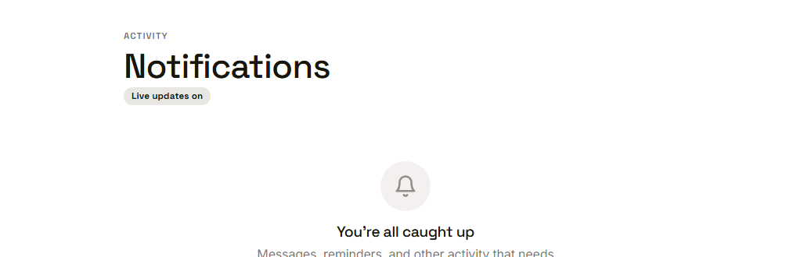
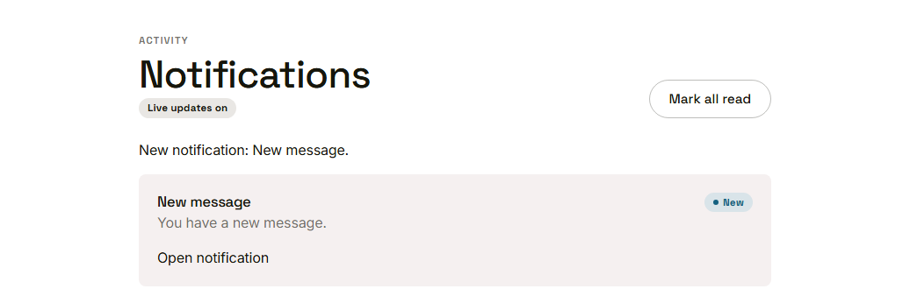
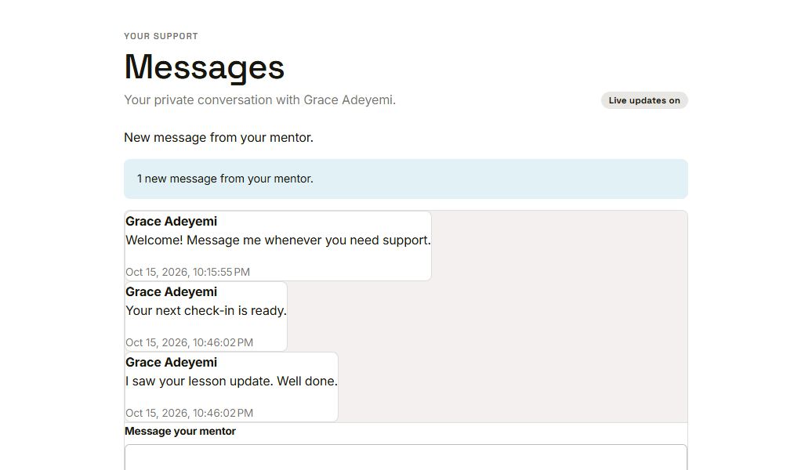

Waypoint · Video 104
Live notifications and messages
Delivered as they happen, only to the right people
Live updates on

The page is connected and listening
It arrives without a reload

A new notification, no refresh
The thread updates by itself

A new message in the thread
Only to the right people
- A valid sign-in token is needed to connect
- A person joins only the groups they are allowed in
- A notification carries nothing the person may not see
Catching up after a drop
- The page reconnects by itself
- It reloads the latest items
- Nothing is missed and nothing appears twice
Things to remember
- New items appear without a reload
- A live updates badge shows the page is listening
- They go only to the people they are meant for
- After a dropped connection, the page catches up by itself